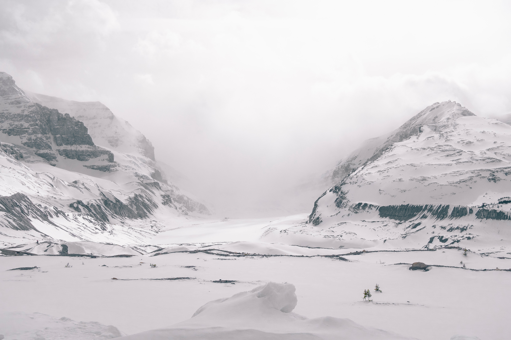

Canada’s Northwest Territories are home to only 40,000 or so people. The province has wide open spaces distinguished by mountains and forests.

Nunavut is the newest territory in Canada. It was separated from the Northwest Territories in 1999. It has a population of 35,944 people. The region is almost entirely tundra, with subarctic parts in the south and polar ice patches in the North. Mining operations, along with hunting, fishing, and tourism support the province’s economy.

The Yukon is the smallest and most western territory of Canada, bordering Alaska. The Yukon is home to approximately 34, 200 people. Most of the people live in the capital city of Whitehorse.